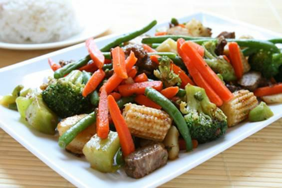

ASSORTIMENT DE LÉGUMES DE HAINAN

De quoi avons nous besoins pour cuisiné ce somptueux repas?
Pour ce repas, nous avons besoins de :
- 2 navets
- 2 petites carottes
- 30ml d’huile d’arachide
- 4 oignons verts
- 480ml de bouillon de poulet
- 3 queues d’asperges fraîches
- 4g de se
- 120g de champignons de Paris
- 1 pincée de sucre
- 120g de pleurotes
- 8 mini-épis de maïs doux
- 15g de fond de poulet
- 8 châtaignes d’eau
- 120g de chair de crabe ou de crevettes non décortiquées (facultatif)
- 2g de gingembre frais
- 15g de légumes secs de Tientsin
- Pâte de farine de maïs
Comment preparer :
- Épluchez navets et carottes.
- Utilisez une cuillère à melon pour découper les navets en boules.
- Découpez les carottes en morceaux d’1,5cm ; puis à l’aide d’un économe, faites quatre entailles
circulaires espacées régulièrement sur chaque morceau sans couper le centre.
- Les carottes
devraient ressembler à de petites fleurs.
- Faites cuire navets et carottes à feu doux dans le
bouillon, jusqu’à ce qu’ils commencent à être tendres.
- Retirez-les du bouillon et plongez-les
dans l’eau froide. Égouttez.
- Coupez oignons, asperges et baby maïs en lamelles de 4cm.
- Hachez ensemble gingembre
frais et légumes secs.
- Dans une petite poêle ou un bol mesureur à température moyenne, faire
fondre le fond de poulet.
- erser de l’huile d’arachide sur le wok chaud.
- Lorsque l’huile
commence à fumer, faites vivement revenir la chair de crabe ou les crevettes durant 1min.
- Ajoutez asperges, maïs, champignons et châtaignes, et faites revenir jusqu’à ce que le tout soit
chaud.
- Ajoutez le mélange au gingembre, puis les oignons. Laissez revenir 30sec.
- Ajoutez lamoitié du bouillon, le sel et le sucre. Portez à ébullition. Ajoutez carottes et navets.
- Recouvrez et réduisez la température ; laissez mijoter 5min.
- Découvrez, sortez les ingrédients
du bouillon, ajoutez quelques gouttes de pâte de maïs pour épaissir un peu.
- Remuez l’ensemble
pour éviter les grumeaux, tout en laissant épaissir. Mélangez tout en ajoutant le bouillon.
- Servez sur un plateau.